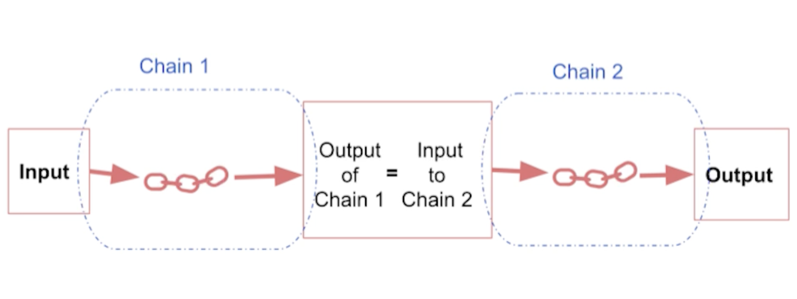
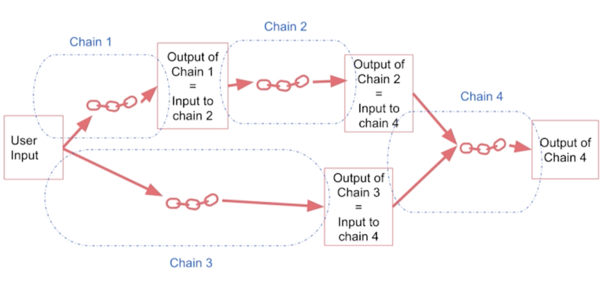
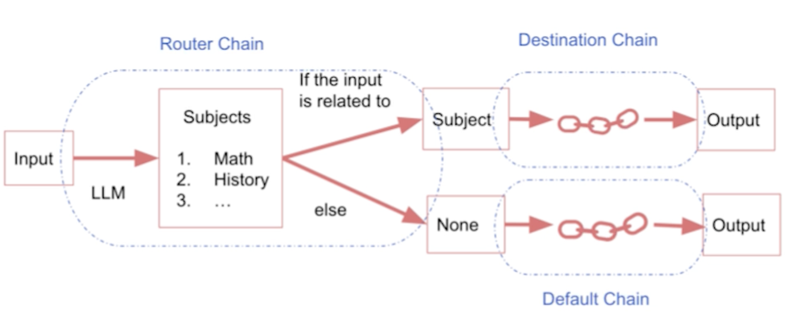
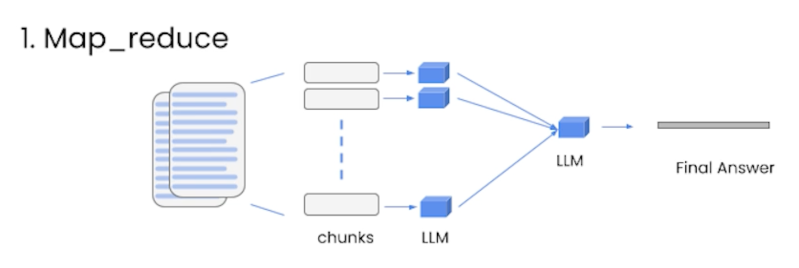
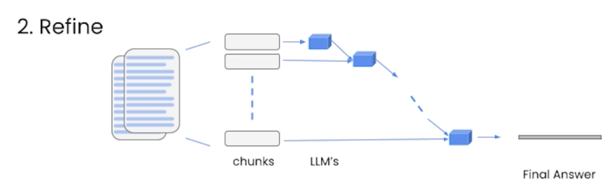
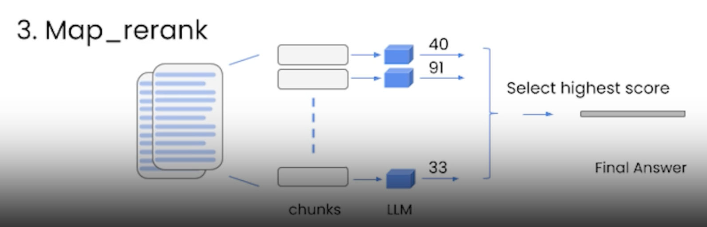
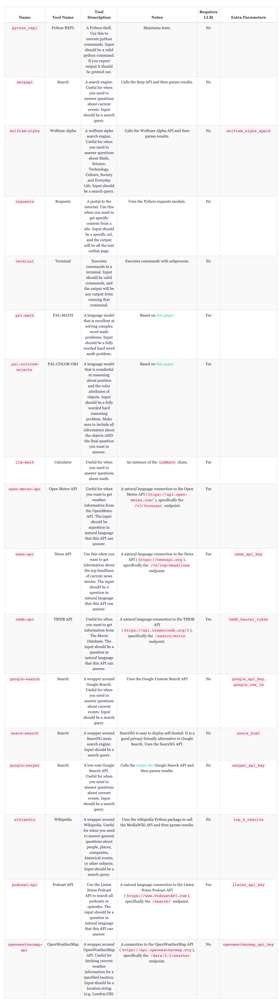

1. Introduction• Open-source development framework for LLM applications.• Supports both Python and JavaScript (TypeScript)• Focused on composition and modularity.• • Key value adds of langchain:– Modular components– Use cases → common ways to combine components• Common components of langchain:– Models* LLMs → 20+ integrations (as of May 2023)* Chat Models* Text Embedding Models → 10+ integrations (as of May 2023)– Prompts* Prompt Templates* Output Parsers → 5+ implementations· Retry/fixing logic* Example Selectors → 5+ implementations– Indexes* Document Loaders → 50+ integrations* Text Splitters → 10+ implementations* Vector Stores → 10+ integrations* Retrievers → 5+ integrations/implementations– Chains* Prompt + LLM + Output parsing* Can be used as building blocks for longer chains* More application-specific chains → 20+ types– Agents* Agent Types → 5+ types· Algorithms for getting LLMs to use tools* Agent Toolkits → 10+ implementations· Agents armed with specific tools for a specific application2. Models, Prompts and ParsersLink to Jupyter notebook• Models → the LLMs.• Prompts → the style treating inputs pass into the LLMs• Parsers → taking the outputs of LLMs and parsing it into a more structured format.2.1. Models• Different types of language models covered in langchain:– LLMs → take a text string as input and return a text string as output.– Chat Models → are usually backed by a language model, but their APIs are more structured. Specifically, these models take a list of Chat Messages as input, and return a Chat Message.– Text Embedding Models → take text as input and return a list of floats.• One of the core value props of LangChain is that it provides a standard interface to models. • • This allows you to swap easily between models. At a high level, there are two main types of models:– Language Models: good for text generation* LLMs: these wrap APIs which take text in and return text* ChatModels: these wrap models which take chat messages in and return a chat message.– Text Embedding Models: good for turning text into a numerical representation.2.1.1. LLMs• The LLM class is a class designed for interfacing with LLMs. • There are lots of LLM providers (OpenAI, Cohere, Hugging Face, etc) - this class is designed to provide a standard interface for all of them. • Here, we will focus on generic LLM functionality. – For details on working with a specific LLM wrapper, please see the examples in the How-To section.•
from langchain.llms import OpenAIllm = OpenAI(model_name="text-ada-001", n=2, best_of=2)# generate textllm("Tell me a joke")# returns -> '\n\nWhy did the chicken cross the road?\n\nTo get to the other side.'# generate: More broadly, you can call it with a list of inputs, getting back a more complete response than just the text.llm_result = llm.generate(["Tell me a joke","Tell me a poem"]*15)
• Get the number of tokens• •
llm.get_num_tokens("what a joke")
• To read more about the general functionalities of LLMs, refer to this page.2.1.2. Chat Models• Chat models are a variation on language models. While chat models use language models under the hood, the interface they expose is a bit different. Rather than expose a “text in, text out” API, they expose an interface where “chat messages” are the inputs and outputs.• •
2.1.3. Text Embedding Models• This documentation goes over how to use the Embedding class in LangChain.• The Embedding class is a class designed for interfacing with embeddings. There are lots of Embedding providers (OpenAI, Cohere, Hugging Face, etc) - this class is designed to provide a standard interface for all of them.• • Embeddings create a vector representation of a piece of text. This is useful because it means we can think about text in the vector space, and do things like semantic search where we look for pieces of text that are most similar in the vector space.• • The base Embedding class in LangChain exposes two methods: embed_documents and embed_query. The largest difference is that these two methods have different interfaces: one works over multiple documents, while the other works over a single document. Besides this, another reason for having these as two separate methods is that some embedding providers have different embedding methods for documents (to be searched over) vs queries (the search query itself).2.2. Prompts• The new way of programming models is through prompts. • A prompt refers to the input to the model. • This input is often constructed from multiple components. • A PromptTemplate is responsible for the construction of this input. • LangChain provides several classes and functions to make constructing and working with prompts easy.• A prompt is the value passed into the Language Model. This value can either be a string (for LLMs) or a list of messages (for Chat Models).• • The data types of these prompts are rather simple, but their construction is anything but. Value props of LangChain here include:– A standard interface for string prompts and message prompts– A standard (to get started) interface for string prompt templates and message prompt templates– Example Selectors: methods for inserting examples into the prompt for the language model to follow– OutputParsers: methods for inserting instructions into the prompt as the format in which the language model should output information, as well as methods for then parsing that string output into a format.– 2.2.1. PromptTemplates• PromptTemplates are responsible for constructing a prompt value. These PromptTemplates can do things like formatting, example selection, and more. At a high level, these are basically objects that expose a format_prompt method for constructing a prompt. Under the hood, ANYTHING can happen.• •
from langchain.prompts import PromptTemplate, ChatPromptTemplatestring_prompt = PromptTemplate.from_template("tell me a joke about {subject}")chat_prompt = ChatPromptTemplate.from_template("tell me a joke about {subject}")string_prompt_value = string_prompt.format_prompt(subject="soccer")chat_prompt_value = chat_prompt.format_prompt(subject="soccer")
2.2.2. Why use prompt templates?• Why are we using prompt templates instead of just an f-string?– As you build sophisticated applications, prompts can be quite long and detailed. – Prompt templates are a useful abstraction to help you reuse good prompts when you can.– • Example:• –
prompt ="""Your task is to determine if the student's solution is correct or not.To solve the problem do the following:- First, work out your own solution to the problem.- Then compare your solution to the student's solutionand evaluate if the student's solution is correct or not....Use the following format:Question:```question here```Student's solution:```student's solution here```Actual solution:```...steps to work out the solution and your solution here```Is the student's solution the same as actual solution \just calculated:```yes or no```Student grade:```correct or incorrect```Question:```{question}```Student's solution:```{student_solution}```Actual solution"""
– – Wrapping the above prompt in langchain's prompt templates makes it easier to reuse a prompt like this.• Langchain also provides prompts for common operations → e.g. summarization, QA, connecting to SQL databases, connecting to different APIs– Using these ready-to-use common prompts from langchain makes it faster to build an application.• One other aspect of langchain's prompt libraries is that it also supports "output parsing".– When you're building a complex applications using LLM, you often instruct the LLM to generate the output in a certain format → such as using certain keywords.– •
EXAMPLES =["""Question: What is the elevation range for the area that the eastern sector of the Colorado orogeny extends into?Thought: need to search Colorado orogeny, find the area that the eastern sector of the Colorado orogeny extends into, then find the elevation range of the area.Action: search [Colorado orogeny]Observation: The Colorado orogeny was an episode of mountain building (an orogeny) in Colorado and surrounding area.Thought: It does not mention the eastern sector. So I need to look up eastern sector. Action: Look up [eastern sector]...Thought: High plains rise in elevation from around 1,800 to 7,000 ft, so the answer is 1,800 to 7,000 ft.Action: Finish[1,800 to 7,000 ft]"""]
• – Example above uses Thought, Action, Observation as keywords for Chain-of-Thought reasonning. (ReAct framework)– If you have a prompt that instructs the LLM to use these specific keywords, then this prompt can be coupled with a parser to extract out the text that has been tagged with these specific keywords.– 3. MemoryLink to Jupyter notebook• Memory is about enabling LLMs to "remember" the previous parts of the conversation.– Memory makes it possible to make LLMs have more conversational flow.• • When using a LLM for a chat conversation, the LLM itself is stateless → each transaction is independent.– Chatbots appear to have memory by providing the full conversation as "context".• As the conversation becomes longer, the amount of memory needed becomes really long → i.e. sending a lot of tokens to the LLM → increasing LLM cost (LLM APIs usually charge by number of tokens).• By default, Chains and Agents are stateless, meaning that they treat each incoming query independently (as are the underlying LLMs and chat models). – In some applications (chatbots being a GREAT example) it is highly important to remember previous interactions, both at a short term but also at a long term level → The Memory does exactly that.• LangChain provides memory components in two forms. – First, LangChain provides helper utilities for managing and manipulating previous chat messages. These are designed to be modular and useful regardless of how they are used. – Secondly, LangChain provides easy ways to incorporate these utilities into chains.3.1. Memory Types• Langchain provides several kinds of "memory" to store and accumulate the conversation.– ConversationBufferMemory* → This memory allows for storing of messages and then extracts the messages in a variable.* ConversationBufferWindowMemory· → This memory keeps a list of the interactions of conversation over time. It only uses the last K interations.* ConversationTokenBufferMemory· → This memory keeps a buffer of recent interactions in memory, and uses token length rather than number of interactions to determine when to flush interactions.* ConversationSummaryMemory· → This memory creates a summary of the conversation over time.3.2. Additional Memory Types• Vector data memory– → Stores text (from conversation of elsewhere) in a vector database and retrieves the most relevant blocks of text.• Entity memory– Using an LLM, it remembers details about specific entities.• You can also use multiple memories at one time.– → e.g. conversation memory + entity memory to recall individuals.• You can also store the conversation in a conventional database (such as key-value store or SQL).4. Indexes• Indexes → refer to ways to structure documents so that LLMs can best interact with them.• The most common way that indexes are used in chains is in a “retrieval” step. – This step refers to taking a user’s query and returning the most relevant documents. – We draw this distinction because:* (1) an index can be used for other things besides retrieval, and * (2) retrieval can use other logic besides an index to find relevant documents. * – We therefore have a concept of a Retriever Interface → this is the interface that most chains work with.• • Most of the time when we talk about indexes and retrieval we are talking about indexing and retrieving unstructured data (like text documents). • For interacting with structured data (SQL tables, etc) or APIs, please see the corresponding use case sections for links to relevant functionality.• LangChain primarily focuses on constructing indexes with the goal of using them as a Retriever. In order to best understand what this means, it’s worth highlighting what the base Retriever interface is. The BaseRetriever class in LangChain is as follows:• •
from abc import ABC, abstractmethodfrom typing import Listfrom langchain.schema import DocumentclassBaseRetriever(ABC): @abstractmethoddefget_relevant_documents(self, query:str)-> List[Document]:"""Get texts relevant for a query. Args: query: string to find relevant texts for Returns: List of relevant documents """
• The main type of Retriever that we focus on is a Vectorstore retriever. • By default, LangChain uses Chroma as the vectorstore to index and search embeddings.• This example showcases question answering over documents. – Question answering over documents consists of four steps:1. Create an index2. Create a Retriever from that index3. Create a question answering chain4. Ask questions!– NOTE → Each of the steps has multiple sub steps and potential configurations.• Let’s import some common classes we’ll use no matter what.• •
from langchain.chains import RetrievalQAfrom langchain.llms import OpenAI
• Let’s also specify the document loader we want to use.• •
from langchain.document_loaders import TextLoaderloader = TextLoader('../state_of_the_union.txt', encoding='utf8')
• To get started as quickly as possible, we can use the VectorstoreIndexCreator.• •
from langchain.indexes import VectorstoreIndexCreatorindex = VectorstoreIndexCreator().from_loaders([loader])
• Now that the index is created, we can use it to ask questions of the data! – NOTE → Note that under the hood this is actually doing a few steps as well– •
query ="What did the president say about Ketanji Brown Jackson"index.query(query)
• NOTE → What is returned from the VectorstoreIndexCreator is VectorStoreIndexWrapper, which provides these nice query and query_with_sources functionality. • • If we just wanted to access the vectorstore directly, we can also do that → index.vectorstore.• If we then want to access the VectorstoreRetriever, we can do that with → index.vectorstore.as_retriever().• How is this index getting created?– A lot of the magic is being hid in this VectorstoreIndexCreator. – What is this doing? – There are three main steps going on after the documents are loaded:* Splitting documents into chunks· →
documents = loader.load()
* Creating embeddings for each document· →
from langchain.text_splitter import CharacterTextSplittertext_splitter = CharacterTextSplitter(chunk_size=1000, chunk_overlap=0)texts = text_splitter.split_documents(documents)
* Storing documents and embeddings in a vectorstore· →
– – So that’s creating the index. Then, we expose this index in a retriever interface.* →
retriever = db.as_retriever()
* – Then, as before, we create a chain and use it to answer questions!* →
qa = RetrievalQA.from_chain_type(llm=OpenAI(), chain_type="stuff", retriever=retriever)query = "What did the president say about Ketanji Brown Jackson"qa.run(query)
– – VectorstoreIndexCreator is just a wrapper around all this logic. * It is configurable in the text splitter it uses, the embeddings it uses, and the vectorstore it uses. * For example, you can configure it as below:· →
4.1. Document Loaders• Combining language models with your own text data is a powerful way to differentiate them. • The first step in doing this is to load the data into “Documents” → a fancy way of say some pieces of text. – The document loader is aimed at making this easy.• The following document loaders are provided.4.1.1. Transform loaders• These transform loaders transform data from a specific format into the Document format. For example, there are transformers for CSV and SQL. Mostly, these loaders input data from files but sometime from URLs.• A primary driver of a lot of these transformers is the Unstructured python package. This package transforms many types of files - text, powerpoint, images, html, pdf, etc - into text data.• Here are some examples of such loaders:– CSV– Email– Epub– EverNote– Excel– File Directory– HTML– Images– Jupyter Notebook– JSON– Copy Paste– Markdown– Powerpoint– Word– Pandas DataFrame– PDF– Telegram– URL– WhatsApp Chat– and more ...4.1.2. Public dataset or service loaders• These datasets and sources are created for public domain and we use queries to search there and download necessary documents. For example, Hacker News service.• We don’t need any access permissions to these datasets and services.– Arxiv– Hacker News– HuggingFace Dataset– iFixit– Wikipedia– YouTube transcripts– and more ...4.1.3. Proprietary dataset or service loaders• These datasets and services are not from the public domain. • These loaders mostly transform data from specific formats of applications or cloud services, for example Google Drive.• We need access tokens and sometime other parameters to get access to these datasets and services.– AWS S3 Directory– AWS S3 File– Azure Blob Storage File– ChatGPT Data– Confluence– Git– Google Drive– Google Cloud Storage File– Microsoft OneDrive– Notion DB 2/2– PySpark DataFrame Loader– ReadTheDocs Documentation– Reddit– Slack– Stripe– Twitter– and more ...4.2. Text Splitters• When you want to deal with long pieces of text, it is necessary to split up that text into chunks. • As simple as this sounds, there is a lot of potential complexity here. – Ideally, you want to keep the semantically related pieces of text together. – What “semantically related” means could depend on the type of text.• • At a high level, text splitters work as following:1. Split the text up into small, semantically meaningful chunks (often sentences).2. Start combining these small chunks into a larger chunk until you reach a certain size (as measured by some function).3. Once you reach that size, make that chunk its own piece of text and then start creating a new chunk of text with some overlap (to keep context between chunks).• • That means there are two different axes along which you can customize your text splitter:– How the text is split– How the chunk size is measured• Most LLMs are constrained by the number of tokens that you can pass in, which is not the same as the number of characters. • In order to get a more accurate estimate, we can use tokenizers to count the number of tokens in the text. – We use this number inside the ..TextSplitter classes. This implemented as the from_<tokenizer> methods of the ..TextSplitter classes:* Hugging Face tokenizer* tiktoken (OpenAI) tokenizer• The default recommended text splitter is the RecursiveCharacterTextSplitter. – This text splitter takes a list of characters. – It tries to create chunks based on splitting on the first character, but if any chunks are too large it then moves onto the next character, and so forth. By default the characters it tries to split on are ["\n\n", "\n", " ", ""]• • In addition to controlling which characters you can split on, you can also control a few other things:– length_function → how the length of chunks is calculated. Defaults to just counting number of characters, but it’s pretty common to pass a token counter here.– chunk_size → the maximum size of your chunks (as measured by the length function).– chunk_overlap → the maximum overlap between chunks. It can be nice to have some overlap to maintain some continuity between chunks (eg do a sliding window).– add_start_index → wether to include the starting position of each chunk within the original document in the metadata.– •
# This is a long document we can split up.withopen('../../state_of_the_union.txt')as f: state_of_the_union = f.read()from langchain.text_splitter import RecursiveCharacterTextSplittertext_splitter = RecursiveCharacterTextSplitter(# Set a really small chunk size, just to show. chunk_size =100, chunk_overlap =20, length_function =len, add_start_index =True,)texts = text_splitter.create_documents([state_of_the_union])print(texts[0])print(texts[1])# page_content='Madam Speaker, Madam Vice President, our First Lady and Second Gentleman. Members of Congress and' metadata={'start_index': 0}# page_content='of Congress and the Cabinet. Justices of the Supreme Court. My fellow Americans.' metadata={'start_index': 82}
• The following text splitters are also available (as of June 2023):– Character* This is the simplest method. This splits based on characters (by default “\n\n”) and measure chunk length by number of characters.· How the text is split→ by single character· How the chunk size is measured→ by number of characters· – Code (including HTML, Markdown, Latex, Python, etc)* CodeTextSplitter allows you to split your code with multiple language support. Import enum Language and specify the language.* *
from langchain.text_splitter import( RecursiveCharacterTextSplitter, Language,)# Full list of support languages[e.value for e in Language]['cpp','go','java','js','php','proto','python','rst','ruby','rust','scala','swift','markdown','latex','html','sol']# You can also see the separators used for a given languageRecursiveCharacterTextSplitter.get_separators_for_language(Language.PYTHON)
– – NLTK* The Natural Language Toolkit, or more commonly NLTK, is a suite of libraries and programs for symbolic and statistical natural language processing (NLP) for English written in the Python programming language.* Rather than just splitting on “\n\n”, we can use NLTK to split based on NLTK tokenizers.· How the text is split→ by NLTK tokenizer.· How the chunk size is measured→ by number of characters· *
#pip install nltk# This is a long document we can split up.withopen('../../../state_of_the_union.txt')as f: state_of_the_union = f.read()from langchain.text_splitter import NLTKTextSplittertext_splitter = NLTKTextSplitter(chunk_size=1000)texts = text_splitter.split_text(state_of_the_union)print(texts[0])
* – Recursive Character* This text splitter is the recommended one for generic text. It is parameterized by a list of characters. It tries to split on them in order until the chunks are small enough. The default list is ["\n\n", "\n", " ", ""]. This has the effect of trying to keep all paragraphs (and then sentences, and then words) together as long as possible, as those would generically seem to be the strongest semantically related pieces of text.· How the text is split → by list of characters· How the chunk size is measured → by number of characters– spaCy* spaCy is an open-source software library for advanced natural language processing, written in the programming languages Python and Cython.* Another alternative to NLTK is to use spaCy tokenizer.· How the text is split → by spaCy tokenizer· How the chunk size is measured → by number of characters· *
#!pip install spacy# This is a long document we can split up.withopen('../../../state_of_the_union.txt')as f: state_of_the_union = f.read()from langchain.text_splitter import SpacyTextSplittertext_splitter = SpacyTextSplitter(chunk_size=1000)texts = text_splitter.split_text(state_of_the_union)print(texts[0])
* – tiktoken (OpenAI)* tiktoken is a fast BPE tokeniser created by OpenAI.· How the text is split: by tiktoken tokens· How the chunk size is measured: by tiktoken tokens· *
#!pip install tiktoken# This is a long document we can split up.withopen('../../../state_of_the_union.txt')as f: state_of_the_union = f.read()from langchain.text_splitter import TokenTextSplittertext_splitter = TokenTextSplitter(chunk_size=10, chunk_overlap=0)texts = text_splitter.split_text(state_of_the_union)print(texts[0])
4.3. Vectorstores• Vectorstores are one of the most important components of building indexes.• A key part of working with vectorstores is creating the vector to put in them, which is usually created via embeddings. Therefore, it is recommended that you familiarize yourself with the embedding notebook before diving into this.• This covers generic high level functionality related to all vector stores.• •
from langchain.embeddings.openai import OpenAIEmbeddingsfrom langchain.text_splitter import CharacterTextSplitterfrom langchain.vectorstores import Chromawithopen('../../state_of_the_union.txt')as f: state_of_the_union = f.read()text_splitter = CharacterTextSplitter(chunk_size=1000, chunk_overlap=0)texts = text_splitter.split_text(state_of_the_union)embeddings = OpenAIEmbeddings()docsearch = Chroma.from_texts(texts, embeddings)query ="What did the president say about Ketanji Brown Jackson"docs = docsearch.similarity_search(query)# Running Chroma using direct local API.# Using DuckDB in-memory for database. Data will be transient.print(docs[0].page_content)
• Some of vectorstores supported in Langchain:– Chroma– FAISS– Pinecone– and more ...• 4.4. Retrievers• The retriever interface is a generic interface that makes it easy to combine documents with language models. • This interface exposes a get_relevant_documents method which takes in a query (a string) and returns a list of documents.• See below for a list of all the retrievers supported:– Arxiv– AWS Kendra– ChatGPT Plugin– Self-querying with Chroma– Cohere Reranker– Metal– Self-querying– TF-IDF– VectorStore– Wikipedia– and more ...4.4.1. Example: Self-querying with Chroma• Here's a demo the SelfQueryRetriever wrapped around a Chroma vector store.• Creating a Chroma vectorstore– First we’ll want to create a Chroma VectorStore and seed it with some data. We’ve created a small demo set of documents that contain summaries of movies.– NOTE → The self-query retriever requires you to have lark installed (pip install lark). We also need the chromadb package.– •
#!pip install lark#!pip install chromadbimport osimport getpassos.environ['OPENAI_API_KEY']= getpass.getpass('OpenAI API Key:')from langchain.schema import Documentfrom langchain.embeddings.openai import OpenAIEmbeddingsfrom langchain.vectorstores import Chromaembeddings = OpenAIEmbeddings()docs =[ Document(page_content="A bunch of scientists bring back dinosaurs and mayhem breaks loose", metadata={"year":1993,"rating":7.7,"genre":"science fiction"}), Document(page_content="Leo DiCaprio gets lost in a dream within a dream within a dream within a ...", metadata={"year":2010,"director":"Christopher Nolan","rating":8.2}), Document(page_content="A psychologist / detective gets lost in a series of dreams within dreams within dreams and Inception reused the idea", metadata={"year":2006,"director":"Satoshi Kon","rating":8.6}), Document(page_content="A bunch of normal-sized women are supremely wholesome and some men pine after them", metadata={"year":2019,"director":"Greta Gerwig","rating":8.3}), Document(page_content="Toys come alive and have a blast doing so", metadata={"year":1995,"genre":"animated"}), Document(page_content="Three men walk into the Zone, three men walk out of the Zone", metadata={"year":1979,"rating":9.9,"director":"Andrei Tarkovsky","genre":"science fiction","rating":9.9})]vectorstore = Chroma.from_documents( docs, embeddings)
• Creating our self-querying retriever– Now we can instantiate our retriever. To do this we’ll need to provide some information upfront about the metadata fields that our documents support and a short description of the document contents.– •
from langchain.llms import OpenAIfrom langchain.retrievers.self_query.base import SelfQueryRetrieverfrom langchain.chains.query_constructor.base import AttributeInfometadata_field_info=[ AttributeInfo( name="genre", description="The genre of the movie",type="string or list[string]",), AttributeInfo( name="year", description="The year the movie was released",type="integer",), AttributeInfo( name="director", description="The name of the movie director",type="string",), AttributeInfo( name="rating", description="A 1-10 rating for the movie",type="float"),]document_content_description ="Brief summary of a movie"llm = OpenAI(temperature=0)retriever = SelfQueryRetriever.from_llm(llm, vectorstore, document_content_description, metadata_field_info, verbose=True)# This example only specifies a relevant queryretriever.get_relevant_documents("What are some movies about dinosaurs")# query='dinosaur' filter=None# [Document(page_content='A bunch of scientists bring back dinosaurs and mayhem breaks loose', metadata={'year': 1993, 'rating': 7.7, 'genre': 'science fiction'}),# Document(page_content='Toys come alive and have a blast doing so', metadata={'year': 1995, 'genre': 'animated'}),# Document(page_content='A psychologist / detective gets lost in a series of dreams within dreams within dreams and Inception reused the idea', metadata={'year': 2006, 'director': 'Satoshi Kon', 'rating': 8.6}),# Document(page_content='Leo DiCaprio gets lost in a dream within a dream within a dream within a ...', metadata={'year': 2010, 'director': 'Christopher Nolan', 'rating': 8.2})]# This example only specifies a filterretriever.get_relevant_documents("I want to watch a movie rated higher than 8.5")# query=' ' filter=Comparison(comparator=<Comparator.GT: 'gt'>, attribute='rating', value=8.5)# [Document(page_content='A psychologist / detective gets lost in a series of dreams within dreams within dreams and Inception reused the idea', metadata={'year': 2006, 'director': 'Satoshi Kon', 'rating': 8.6}),# Document(page_content='Three men walk into the Zone, three men walk out of the Zone', metadata={'year': 1979, 'rating': 9.9, 'director': 'Andrei Tarkovsky', 'genre': 'science fiction'})]# This example specifies a query and a filterretriever.get_relevant_documents("Has Greta Gerwig directed any movies about women")# query='women' filter=Comparison(comparator=<Comparator.EQ: 'eq'>, attribute='director', value='Greta Gerwig')# [Document(page_content='A bunch of normal-sized women are supremely wholesome and some men pine after them', metadata={'year': 2019, 'director': 'Greta Gerwig', 'rating': 8.3})]# This example specifies a query and composite filterretriever.get_relevant_documents("What's a movie after 1990 but before 2005 that's all about toys, and preferably is animated")# query=' ' filter=Operation(operator=<Operator.AND: 'and'>, arguments=[Comparison(comparator=<Comparator.EQ: 'eq'>, attribute='genre', value='science fiction'), Comparison(comparator=<Comparator.GT: 'gt'>, attribute='rating', value=8.5)])# [Document(page_content='Three men walk into the Zone, three men walk out of the Zone', metadata={'year': 1979, 'rating': 9.9, 'director': 'Andrei Tarkovsky', 'genre': 'science fiction'})]# This example specifies a query and composite filterretriever.get_relevant_documents("What's a movie after 1990 but before 2005 that's all about toys, and preferably is animated")# query='toys' filter=Operation(operator=<Operator.AND: 'and'>, arguments=[Comparison(comparator=<Comparator.GT: 'gt'>, attribute='year', value=1990), Comparison(comparator=<Comparator.LT: 'lt'>, attribute='year', value=2005), Comparison(comparator=<Comparator.EQ: 'eq'>, attribute='genre', value='animated')])# [Document(page_content='Toys come alive and have a blast doing so', metadata={'year': 1995, 'genre': 'animated'})]
5. ChainsLink to Jupyter notebook• The "chain" combines different elements of an LLM applications.• Langchain offers different kinds of chains:– LLMChain → the simplest chain → usually takes an LLM + prompt as input.– SequentialChain → another type of chains. The idea is to combine multiple chains where the output of one chain is the input of the next chain.* SimpleSequentialChain → single input/output* SequentialChain → multiple inputs/outputs– Router Chain* MultiPromptChain* LLMRouterChain* DefaultChain → the default route if none of the other routes is picked.

Figure 1:SimpleSequentialChain

Figure 2:SequentialChain

Figure 3:Router Chain
6. Question and AnswerLink to Jupyter notebook• LLMs can only inspect a few thousand words at a time.• What should we do if we want to use LLMs along with larger documents?– This is where embeddings and vectorstores come to play.• Embeddings → create numerical representation for pieces of text.– This numercial representation captures the "semantic" meaning of that text.– → Texts with similar content will have similar vectors.• Vectore database → they're used to store the vector representations.– We creates smaller chunks of a larger document and store the embeddings of those chunks into the database → This is called indexing.– Once we get a query, we create an embedding of the query and compare that against all the entries in the vector database → and pick the n most similar ones.• Retrievers → They fetch documents from the vectorstore and provide them to the LLM.6.1. "stuff" method in Retrieval chains• Stuffing is the simplest method where you simply stuff all data into the prompt as context to pass to the language model.– Pros → It makes a single call to the LLM. The LLM has access to all the data at once.– Cons → LLMs have a context length, and for large documents or many documents this will not work as it will result in a prompt larger than the context length.• map_reduce → when the number of (or the document itself) documents is large, it takes all the chunks and passes them along with the question to the LLM, gets back the response and then uses another LLM call to summarize all the individual responses into a final answer.– Pros → we can handle any number of documents now.– Cons → it takes more LLM calls. It also treat each chunks independently which may not be ideal in some cases.• Aside from QA, map_reduce is very common for summarization tasks.

• refine → it also loops over many documents, but it does it iteratively → i.e. it builds upon the answer from the previous document.– It usually takes takes longer (while taking as many as calls as map_reduce) to run and tends to return longer answers.

• map_rerank → You do a single to LLM for each document, and you also it to return a score and then you select the highest score.– This relies on language model to know what the score should be → so you often have to tell it to return high score if it's relevent to the document and visa versa.– Similar to map_reduce all the calls are independent → so you can batch them.– It's relatively fast.

7. EvaluationLink to Jupyter notebook• The simplest way is to come up with some data points that we think are good examples to evaluate on.– → This method doesn't scale that much.– Is there a way that we can automate it? → We can LLMs themselves to do that.* The QAGenerationChain from langchain.evaluation.qa can generate a bunch of questions and answers → so that we don't have to come up with them.• What we can do after creating those examples, is to pass them as query to the language model– e.g. → qa.run(examples[0]["query"])– NOTE → To see more details of what's happening under the hood, we can use the debugging feature of langchain → langchain.debug = True– To do the evaluation we use QAEvalChain from langchain.evaluation.qa.* We initialize the chain using a language model.* We then pass it the examples along with the predictions from the LLM· → eval_chain = QAEvalChain.from_llm(llm)· → graded_output = eval_chain.evaluate(examples, predictions)8. AgentsLink to Jupyter notebook• Some applications will require not just a predetermined chain of calls to LLMs/other tools, but potentially an unknown chain that depends on the user's input. In these types of chains, there is a “agent” which has access to a suite of tools. Depending on the user input, the agent can then decide which, if any, of these tools to call.• Different topics related to agents:– Tools → How language models interact with other resources.– Agents → The language model that drives decision making.– Toolkits → Sets of tools that when used together can accomplish a specific task.– AgentExecutor → The logic for running agents with tools.8.1. Tools• A specific abstraction around a function that makes it easy for a language model to interact with it. – Specificlaly, the interface of a tool has a single text input and a single text output.• Tools are functions that agents can use to interact with the world. These tools can be generic utilities (e.g. search), other chains, or even other agents.• •
from langchain.agents import load_toolstool_names =[...]tools = load_tools(tool_names)
• NOTE → Some tools (e.g. chains, agents) may require a base LLM to use to initialize them. In that case, you can pass in an LLM as well:• •
from langchain.agents import load_toolstool_names =[...]llm =...tools = load_tools(tool_names, llm=llm)
• Below is a list of all supported tools and relevant information:– Tool Name: The name the LLM refers to the tool by.– Tool Description: The description of the tool that is passed to the LLM.– Notes: Notes about the tool that are NOT passed to the LLM.– Requires LLM: Whether this tool requires an LLM to be initialized.– (Optional) Extra Parameters: What extra parameters are required to initialize this tool.8.1.1. List of Tools• NOTE → the actual list of tools are more than what's shown in the table below as it keeps getting updated with more tools. For a complete list refer to the langchain documentation.

• To define custom Tools, refer to this page.8.2. Agents• Agents use an LLM to determine which actions to take and in what order. An action can either be using a tool and observing its output, or returning a response to the user. • • Here are the agents available in LangChain.– zero-shot-react-description* This agent uses the ReAct framework to determine which tool to use based solely on the tool’s description. * Any number of tools can be provided. This agent requires that a description is provided for each tool.– react-docstore* This agent uses the ReAct framework to interact with a docstore. * Two tools must be provided: · a Search tool· a Lookup tool · They must be named exactly as so.* The Search tool should search for a document, while the Lookup tool should lookup a term in the most recently found document. * This agent is equivalent to the original ReAct paper, specifically the Wikipedia example.– self-ask-with-search* This agent utilizes a single tool that should be named Intermediate Answer. * This tool should be able to lookup factual answers to questions. * This agent is equivalent to the original self ask with search paper, where a Google search API was provided as the tool.– conversational-react-description* This agent is designed to be used in conversational settings. * The prompt is designed to make the agent helpful and conversational. * It uses the ReAct framework to decide which tool to use, and uses memory to remember the previous conversation interactions.• To create custom agents → refer to this page.8.3. Toolkits• An agent applied to a particular use case.• Here's a list of agent toolkits:– Azure Cognitive Services Toolkit– CSV Agent– Gmail Toolkit– Jira– JSON Agent– OpenAPI agents– Natural Language APIs– Pandas Dataframe Agent– PlayWright Browser Toolkit– PowerBI Dataset Agent– Python Agent– Spark Dataframe Agent– Spark SQL Agent– SQL Database Agent– Vectorstore Agent• Below, we'll see an example of an agent toolkit.8.3.1. Example: Python Agent• This code showcases an agent designed to write and execute python code to answer a question.• •
from langchain.agents.agent_toolkits import create_python_agentfrom langchain.tools.python.tool import PythonREPLToolfrom langchain.python import PythonREPLfrom langchain.llms.openai import OpenAIagent_executor = create_python_agent( llm=OpenAI(temperature=0, max_tokens=1000), tool=PythonREPLTool(), verbose=True)# Fibonacci exampleagent_executor.run("What is the 10th fibonacci number?")> Entering new AgentExecutor chain... I need to calculate the 10th fibonacci numberAction: Python REPLAction Input:deffibonacci(n):if n ==0:return0elif n ==1:return1else:return fibonacci(n-1)+ fibonacci(n-2)Observation:Thought: I need to call the function with10as the argumentAction: Python REPLAction Input: fibonacci(10)Observation:Thought: I now know the final answerFinal Answer:55> Finished chain.'55'
8.4. AgentExecutors• Agent executors take an agent and tools and use the agent to decide which tools to call and in what order.8.4.1. Example: How to combine agents and vectorstores• This notebook covers how to combine agents and vectorstores. The use case for this is that you’ve ingested your data into a vectorstore and want to interact with it in an agentic manner.• The recommended method for doing so is to create a RetrievalQA and then use that as a tool in the overall agent. Let’s take a look at doing this below. You can do this with multiple different vectordbs, and use the agent as a way to route between them. There are two different ways of doing this - you can either let the agent use the vectorstores as normal tools, or you can set return_direct=True to really just use the agent as a router.• Create the vectorstore•
# Import things that are needed genericallyfrom langchain.agents import initialize_agent, Toolfrom langchain.agents import AgentTypefrom langchain.tools import BaseToolfrom langchain.llms import OpenAIfrom langchain import LLMMathChain, SerpAPIWrappertools =[ Tool( name ="State of Union QA System", func=state_of_union.run, description="useful for when you need to answer questions about the most recent state of the union address. Input should be a fully formed question."), Tool( name ="Ruff QA System", func=ruff.run, description="useful for when you need to answer questions about ruff (a python linter). Input should be a fully formed question."),]# Construct the agent. We will use the default agent type here.# See documentation for a full list of options.agent = initialize_agent(tools, llm, agent=AgentType.ZERO_SHOT_REACT_DESCRIPTION, verbose=True)agent.run("What did biden say about ketanji brown jackson is the state of the union address?")
• •
> Entering new AgentExecutor chain... I need to find out what Biden said about Ketanji Brown Jackson in the State of the Union address.Action: State of Union QA SystemAction Input: What did Biden say about Ketanji Brown Jackson in the State of the Union address?Observation: Biden said that Jackson is one of the nation's top legal minds and that she will continue Justice Breyer's legacy of excellence.Thought: I now know the final answerFinal Answer: Biden said that Jackson is one of the nation's top legal minds and that she will continue Justice Breyer's legacy of excellence.> Finished chain.
•
"Biden said that Jackson is one of the nation's top legal minds and that she will continue Justice Breyer's legacy of excellence."
•
agent.run("Why use ruff over flake8?")
•
> Entering new AgentExecutor chain... I need to find out the advantages of using ruff over flake8Action: Ruff QA SystemAction Input: What are the advantages of using ruff over flake8?Observation: Ruff can be used as a drop-in replacement for Flake8 when used (1) without or with a small number of plugins, (2) alongside Black, and (3) on Python 3 code. It also re-implements some of the most popular Flake8 plugins and related code quality tools natively, including isort, yesqa, eradicate, and most of the rules implemented in pyupgrade. Ruff also supports automatically fixing its own lint violations, which Flake8 does not.Thought: I now know the final answerFinal Answer: Ruff can be used as a drop-in replacement for Flake8 when used (1) without or with a small number of plugins, (2) alongside Black, and (3) on Python 3 code. It also re-implements some of the most popular Flake8 plugins and related code quality tools natively, including isort, yesqa, eradicate, and most of the rules implemented in pyupgrade. Ruff also supports automatically fixing its own lint violations, which Flake8 does not.> Finished chain.
•
'Ruff can be used as a drop-in replacement for Flake8 when used (1) without or with a small number of plugins, (2) alongside Black, and (3) on Python 3 code. It also re-implements some of the most popular Flake8 plugins and related code quality tools natively, including isort, yesqa, eradicate, and most of the rules implemented in pyupgrade. Ruff also supports automatically fixing its own lint violations, which Flake8 does not.'
9. Use Cases9.1. Question Answering over Docs• Question answering in this context refers to question answering over your document data. • For question answering over many documents, you almost always want to create an index over the data. – This can be used to smartly access the most relevant documents for a given question, allowing you to avoid having to pass all the documents to the LLM (saving you time and money).• • See this notebook for a more detailed introduction to this, but for a super quick start the steps involved are as follows.9.1.1. Load Your Documents•
from langchain.document_loaders import TextLoaderloader = TextLoader('../state_of_the_union.txt')
9.1.2. Create Your Index•
from langchain.indexes import VectorstoreIndexCreatorindex = VectorstoreIndexCreator().from_loaders([loader])
9.1.3. Query Your Index•
query ="What did the president say about Ketanji Brown Jackson"index.query(query)# Alternatively, use `query_with_sources` to also get back the sources involvedquery ="What did the president say about Ketanji Brown Jackson"index.query_with_sources(query)
9.1.4. Document Question Answering• Question answering involves fetching multiple documents, and then asking a question of them. The LLM response will contain the answer to your question, based on the content of the documents.• The recommended way to get started using a question answering chain is:• •
from langchain.chains.question_answering import load_qa_chainchain = load_qa_chain(llm, chain_type="stuff")chain.run(input_documents=docs, question=query)